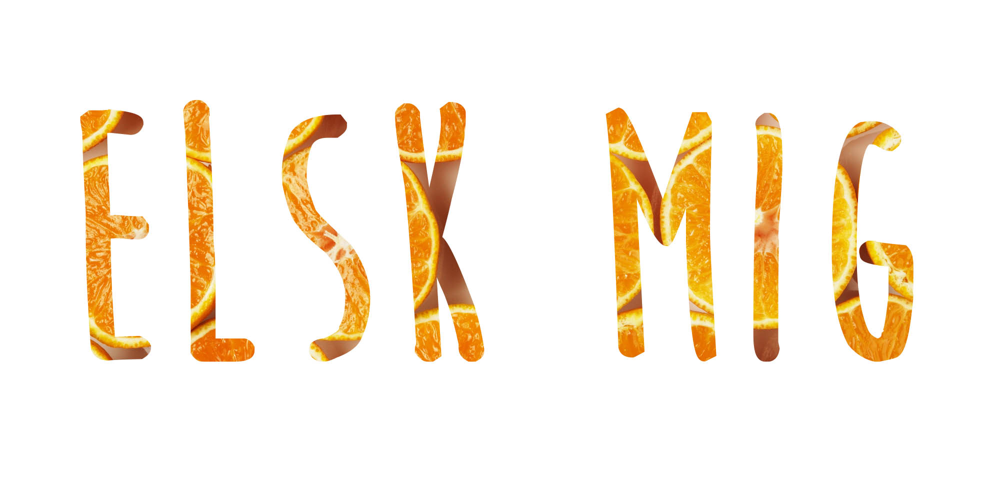

Så se med her..
 PRØV DETTE!
PRØV DETTE!
10 cl Gents Tonic
Sød (ikke bitter) Appelsinmarmelade
Appelsinskal
GIN&TONIC ORANGE

10 stk. lakseportioner à 125 g
125 g Skælskør appelsinmarmelade
Frisk eller tørret dild
Salt og peber
Evt. creme fraiche rørt med dild, salt og peber
Ovnbagt laks med appelsinmarmelade

150 g appelsinmarmelade
200 g revet Original ODENSE Marcipan
100 g hvedemel
1 tsk. bagepulver
100 g smør
Appelsinsirup
150 g appelsinmarmelade
½ dl hvid portvin
Mazarin kage med appelsin og marcipan

Brug en god appelsinmarmelade, vi forslår appelsinmarmeladen fra gestus..
Gestus er en serie af velsmagende madvarer – altid af en god kvalitet og passer ind i et hverdagsbudget.
Hos Gestus brænder vi nemlig for, at give danskerne mest muligt for pengene, både når vi taler kvalitet, pris og smagsoplevelser.
Og fordi vores sortiment tager udgangspunkt i din hverdag, inviterer vi danskerne til at være med i vores mange bruger- og produkttests – og derfor bliver meget af det, vi tilbyder, reelt udvalgt af danskerne selv.
Hos Gestus brænder vi nemlig for, at give danskerne mest muligt for pengene, både når vi taler kvalitet, pris og smagsoplevelser.
Og fordi vores sortiment tager udgangspunkt i din hverdag, inviterer vi danskerne til at være med i vores mange bruger- og produkttests – og derfor bliver meget af det, vi tilbyder, reelt udvalgt af danskerne selv.
